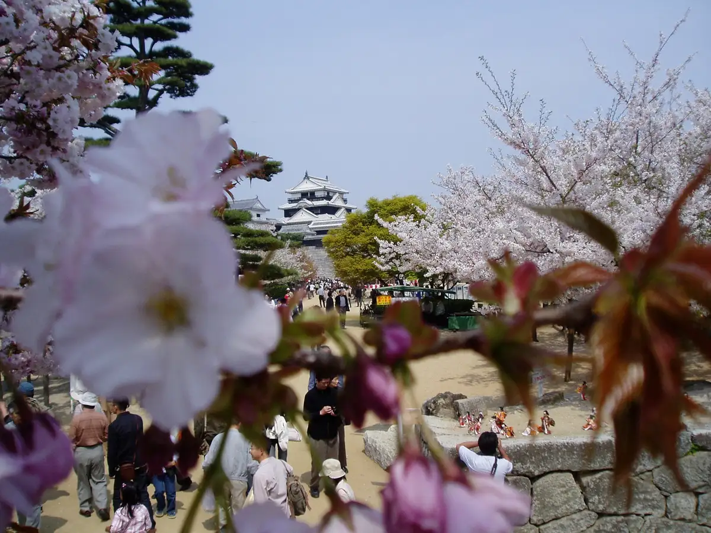
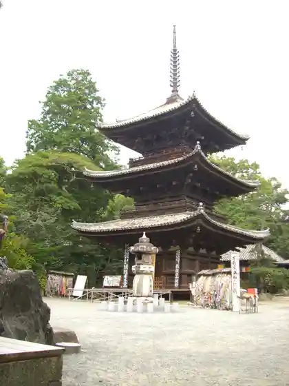
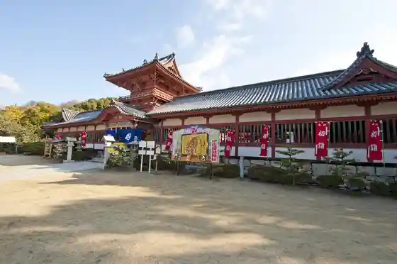
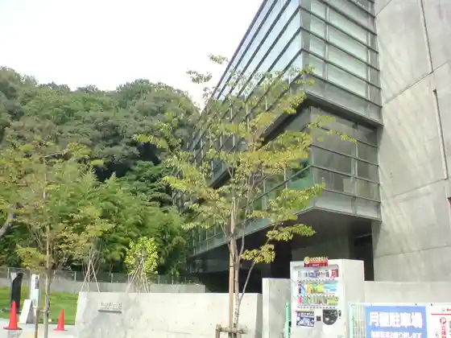
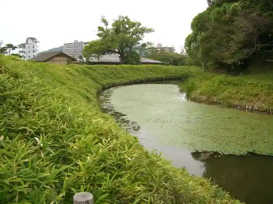

Matsuyama
Matsuyama · Ehime
Matsuyama
Highlighted on the Ehime map.

Stay
Dogo Onsen Dogo Gu Land Hotel
Hotel Maisuteizu Matsuyama
Dogo Purinsu Hotel Jun Hana Omomuki Yu Attaraiina, Ga Waku Yuyado
Dogo Onsen Dogo Kan
Chekkuin Matsuyama
Dogo Onsen Funaya
Dogo Onsen Yamatoya Main Shop
Dogo Onsen Hotel Tsubaki Kan
Hotel Taihei Matsuyama Joka no Tennen Onsen (Kanran Baths) ― Oku Dogonsen Hiki Yu ―
Matsuyama Castle main bailey with cherry blossoms
Dogo Onsen Hanayu Zuki
Dogo Onsen Cha Ha Ru
Tennen Onsen Matsuyama Nyugu Land Hotel
Dogo Onsen Orudoingu Land Dogo Yama no Te Hotel
Oku Dogo Ichi Yu no Shu (Ichiyu no Mori)
Hotel No.1 Matsuyama
Azumamichi Nochi no Soratomori
Hotel Dogo Yaya
Taka no Ko no Hotel
Oedo Onsen Monogatari Dogo
Nesuto Hotel Matsuyama
CANDEO HOTELS (Kandeo Hotel Zu) Matsuyama Taigai Michi
Daiwaroinetto Hotel Matsuyama
Ribumakkusu Resort Oku Dogo
Tennen Onsen Ishite Baths Domiiin Matsuyama (Domiiin Onjuku no no Hotel Zugurupu)
Dogo Onsen Yachiyo
Dogo Onsen Hotel Ko Yu Sono Haruka
Dogo hakuro
Konfoto Hotel Matsuyama
Refu Matsuyama Eki by Besseru Hotel Zu |REF Matsuyama Eki | Sauna Tsuki Public Bath (Matsuyama Eki Rinsetsu)
Hiyori Hotel Matsuyama
Apa Hotel (Matsuyama Ekimae) (2026 Nen 7 Gatsu OPEN)
Dining
Kurumasushi
Sushi I no
Dogo Kaishu
Namae no Nai Itaria Ryoriten
Chiso Ya Kawa no
Sushi Kawanaka
Scino
Yoshoku Ya Shii
Aji Koyomi Masao
Sumi Kokoro
Shanhai Tenshin Arakajime Sono
Nabeyaki Udon Asahi
Ra Sera
Sakana Workshop Maru Man
Kotori
Kiri no Mori Kashi Workshop Matsuyama Mise
Onsen
Dogonsen Honkan
Dogo Onsen Honkan, Matsuyama
Dogo Onsen Dogo Gu Land Hotel Public Bath
Dogo Purinsu Hotel Jun Hana Omomuki Yu Attaraiina, Ga Waku Yuyado Yu no Ne
Dogo Onsen Dogo Kan Public Bath
Chekkuin Matsuyama Public Bath
Dogo Onsen Funaya Public Bath
Dogo Onsen Yamatoya Main Shop Rotemburo
Dogo Onsen Hotel Tsubaki Kan Rotemburo
Hotel Taihei Matsuyama Joka no Tennen Onsen (Kanran Baths) ― Oku Dogonsen Hiki Yu ― Rotemburo
Matsuyama Castle main bailey with cherry blossoms
Dogo Onsen Hanayu Zuki Tembo Rotemburo
Dogo Onsen Cha Ha Ru Rotemburo
Tennen Onsen Matsuyama Nyugu Land Hotel Public Bath
Dogo Onsen Orudoingu Land Dogo Yama no Te Hotel Public Bath
Oku Dogo Ichi Yu no Shu (Ichiyu no Mori) Iwa Yu
Hotel No.1 Matsuyama Public Bath
Azumamichi Nochi no Soratomori Public Bath
Taka no Ko no Hotel Rotemburo
Oedo Onsen Monogatari Dogo Rotemburo
CANDEO HOTELS (Kandeo Hotel Zu) Matsuyama Taigai Michi Rotemburo
Ribumakkusu Resort Oku Dogo Public Bath
Tennen Onsen Ishite Baths Domiiin Matsuyama (Domiiin Onjuku no no Hotel Zugurupu) Public Bath
Dogo Onsen Yachiyo Public Bath
Dogo Onsen Hotel Ko Yu Sono Haruka Rotemburo
Dogo hakuro Public Bath
Refu Matsuyama Eki by Besseru Hotel Zu |REF Matsuyama Eki | Sauna Tsuki Public Bath (Matsuyama Eki Rinsetsu) Public Bath
Experience
Botchan Ressha
Botchan Train, Matsuyama
Sights
Matsuyama Shiro
Matsuyama Castle main bailey with cherry blossoms
Ishite Tera
Ishite-ji Temple, Matsuyama

Isa Ji Nami Shrine
Isaniwa Shrine tower gate

Saka no Ue no Kumo Museum
Saka-no-ue-no-kumo Museum

Yu Chiku Castle Ruins
Yuzuki Castle ruins in Dogo Park

Matsuyama General Park
Matsuyama Comprehensive Park